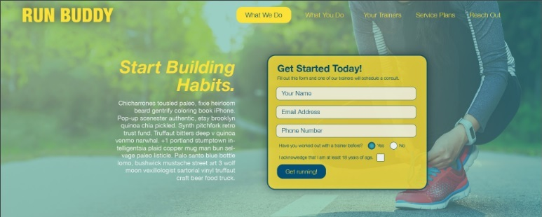

John C. Ryan
Portfolio
I am a chef and butcher, now learning how to code during this pandemic. I enjoy finding and solving problems.
-
Butchery, Fine Dining, Menu Development
-
Basic HTML, CSS, JavaScript, and Python knowledge.
-
.
-
March 2019 - presentContract educator
-
September 2015 - Jan 2019Contract head butcher
-
July 2012- November 2014Head Chef

Project:
Run Buddy
A still ongoing project focused on leaning formatting technique via real world practice
My name is John Ryan, I have been many things in my life. Chef, butcher, firefighter, teacher, and now I am moving into web development. I enjoy understanding the roots of problems and finding a solution that is not only serviceable but also elegant. My past work history has taught me how to budget my time, understand and break down complex problems into their component parts, and how to deal with pressure. Honestly, as challenging as javascript can be, it does not compare with falling through a burning roof on the stress scale. I hope you enjoy looking through my past projects. Please feel free to reach out with any questions you may have about my work. I approach anything I do with an eye for minimalism and flow, here you find a site broken down into two centered columns. I find that oftentimes a busy page gets less across than a sparse one. I hope you like what I have to show you.